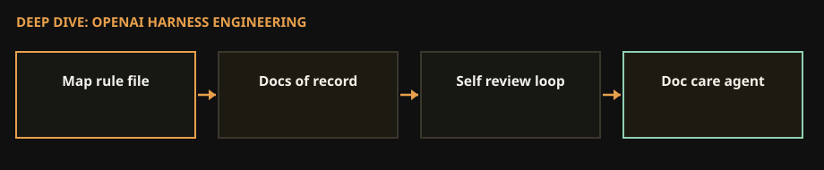

Deep Dive: OpenAI Harness Engineering
The full system from the OpenAI post, read in full: a map style AGENTS.md, a docs system of record, layer law, a doc care agent, and the self review loop. Source: openai.com/index/harness-engineering. Confidence: High.

The experiment in numbers
An internal product built with zero hand written code: near 1 million lines in five months, near 1,500 PRs, a team that grew from 3 to 7 engineers, an average of 3.5 PRs per engineer per day, and a build time near one tenth of the manual path. The first commit and the first AGENTS.md came from the agent itself. Their line: humans steer, agents execute.
The self review loop, step by step
- The engineer writes a prompt. The agent opens a PR.
- The agent reviews its own change on the local checkout.
- The agent calls named agent reviews, local and cloud, one per concern.
- The agent answers human and agent notes, and loops until all agent reviewers pass.
- The post names the shape a Ralph Wiggum loop: the same agent works its own review queue until the queue is empty.
- Single runs pass six hours with no human touch, often across sleep hours.
Legibility and observability kit
- The app boots per worktree, one instance per change, so an agent can drive its own build.
- Browser control sits in the agent runtime: DOM snapshots, screenshots, navigation.
- Each worktree gets a throwaway observability stack: logs, metrics, traces, torn down at task end.
- Agents query logs with LogQL and metrics with PromQL. Sample goals from the post: service start under 800ms, and no span in four key user journeys past two seconds.
AGENTS.md as a map
One big instruction file failed four ways: context is scarce, long text stops guiding, the file rots, and no check can verify it. The fix: AGENTS.md at near 100 lines as a table of contents. The knowledge lives in a structured docs tree as the system of record: design docs with an index and a verification state per doc, an architecture doc with domains and layer order, a quality doc that grades each domain and layer, and plans as first class files with progress and decision logs in git. Freshness is a mechanical check: linters and CI verify doc structure, cross links, and currency.
The doc care agent
A recurring agent scans for docs that no longer match code behavior and opens fix PRs. Docs rot is treated as a bug class with an owner, and the owner is an agent.
Layer law
Per business domain, dependencies flow one way only: Types -> Config -> Repo -> Service -> Runtime -> UI Cross cutting concerns (auth, connectors, telemetry, feature flags) enter through one interface: Providers. Enforcement: custom linters plus structural tests. Lint error text carries the fix instruction, so the error message itself teaches the agent in context.
Entropy control
Hand clean up failed: the team spent each Friday, 20 percent of the week, on slop removal. The fix has two parts. Golden principles live in the repo: prefer shared utility packages over hand rolled helpers, and no YOLO data probing, with boundary checks or typed SDKs in place of guesses. Background agent tasks scan for drift from the principles, update quality grades, and open small refactor PRs that a human can review in under a minute and often auto merge.
End to end autonomy, from one prompt
Their list: validate state, reproduce the bug, record a video of the failure, build the fix, validate by driving the app, record a second video, open the PR, answer feedback, fix build breaks, escalate only on a judgment call, merge.
Apply this to your work
Your repos carry the same rot risk at larger scale: dozens of study and library repos, each with rules, indexes, and plans. Copy three parts at once. One: cut each repo rule file to a map near 100 lines, with the deep rules in a docs tree that holds a verification state per doc. Two: a doc care routine that scans for stale index and plan files and opens fix PRs. Three: lint errors that teach: your STE checker and watermark checker already return fix text, so wire that text into agent context as the remediation step, in place of a pass or fail line alone.
Replication checklist
- Measure your largest rule file. Cut it to a map. Move depth into a docs tree with states.
- Write the layer order for one service you own. Add one structural test that fails on a wrong import.
- Start one doc care routine on one repo. Gate: PRs only, no direct pushes.
- Add fix text to one lint rule you own. Read the next agent run for the change in behavior.
Prompt file: prompts/harness-loop.md.
Visual map of this page
Two views of one page: a Mermaid flow for work order, rendered by the local Mermaid library in this folder, and a markmap for concept groups.
Mermaid source, for offline read
flowchart LR A[Prompt] --> B[Agent opens PR] B --> C[Self review] C --> D[Named agent reviews] D -->|notes| C D -->|all pass| E[Merge] F[Doc care scan] --> G[Fix PRs for stale docs]
How to read the flow diagram. Step 1: start at the first box. Step 2: follow each arrow to the next stage. Step 3: at a branch box, read both paths before a choice. Step 4: a loop arrow means work returns for one more pass vs a test.
Markmap: concepts on this page
- Deep Dive: OpenAI Harness Engineering
- Docs
- Design index
- Architecture and layers
- Quality grades
- Plans as files
- Layer law
- Types to UI, one way
- Providers for cross cuts
- Entropy
- Golden principles
- Drift scan PRs
- Docs